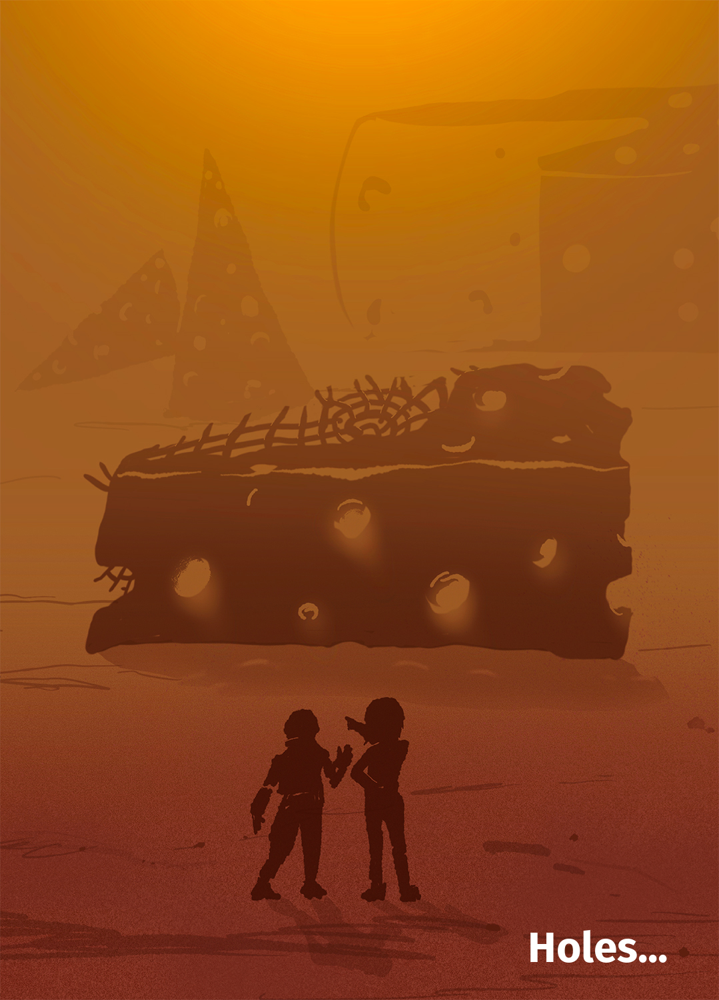

4 Holes…

In this chapter, we will face the difficulties of interpreting colors, illusions about shapes, and other imperfections of the human visual perception system. A system that has evolved over thousands of years, but to ensure our survival on the savannah, not the precise reading of statistical charts. Understanding the mechanisms that govern perception is an important, though often overlooked, step on the road to creating legible graphics. For quite a long time, I myself was focused solely on mathematical correctness in coding data on plots, not caring about the limitations of the viewer’s perception. But a decade ago, through a series of conversations with Ross Ihaka, I changed my way of thinking completely. Ross Ihaka is one of the two main developers of the R language, a man focused on creating tools for statistical analysis and data communication. In 2005, he developed the course “Information Visualization” specifically for statistics students, so that they could better understand how the visual pathway works, and what affects image perception or color perception. The course is available at https://www.stat.auckland.ac.nz/~ihaka/courses/120/. Let’s see what visual perception-related pitfalls await us, and then discuss solutions to increase the readability of data in statistical plots.
Dear Reader, it’s high time for you to learn the absolute most important truth about data visualization: It is not important what you presented on the plot, the key is what will be read.
Would you say that this can’t be difficult? That, after all, each of us is taught from birth to look and seek information in images? Unfortunately, quite often our perception behaves contrary to our intuition. Worse – it deliberately leads us astray. If we want our charts to be well understood and interpreted, we should become familiar with several limitations of our visual perception and learn how to deal with them. Below we will discuss three types of problems that our perception provides us with. Fortunately, each of them can be dealt with somehow.
4.1 Holes in color perception
Color is a color, it’s clear as day. Is that so? Let’s see what two great researchers thought about colors – Isaac Newton and Johann Wolfgang von Goethe. Already in elementary school we are introduced to Newton’s perspective, we learn about the physical properties of light, that white light is a mixture of wavelengths of different lengths that can be split by a prism, as Isaac Newton demonstrated in 1672. Such thinking about colors is focused on the physical properties of a mixture of different wavelengths.
Johann Wolfgang von Goethe wrote about colors in a completely different way. He noticed some discrepancies between Newton’s physical description of light and human perception of colors. He observed that color appears not only where there is light, but also where there is no light. If one looks at a strong source of light, such as the sun or white snow on a sunny day, and then enters a completely shaded room, one will observe the impression of swirling red circles. Goethe’s observation was that shaded places seem to have colors especially when adjacent to, for example, strongly reflective snow. Although a shadow is, after all, according to Newton’s theory, a place where there is no light, so there are no colors.
Thus, color impressions depend on both what we have seen before and what is still in our visual field. Goethe published his results in 1810 in the work Theory of Colors (Goethe 1810. ), which he reportedly valued more than his poetic work. In his theory, Goethe attached great importance to color impressions, their perception depending on various factors, including the emotions of the observer. Goethe considered his theory to be opposed to Newton’s theory.

Dear Reader, if at this point you think that all this subjective color theory is a rubbish, it means that you are ready for an experiment that will show you that the same colors can be read differently. In Figure 4.1 in the margin, you’ll find an illustration first published by Edward Adelson in 1995. Look at the top panel. Do the A and B squares on the chessboard have different colors? Without a shadow of a doubt, we will probably conclude that field A is darker than field B. However, if we were to remove the context from this drawing, for example, by covering everything but these fields with a finger, or connect these squares with a strip, then we would notice that they are actually the same color.
Depending on the context, we can make the gray color be perceived as yellow or blue, as exemplified by the picture of the dress in Figure 4.2. A few years ago, there was a war on the Internet about whether it was a black and blue dress or a white and gold dress.to determine whether it was a black and blue dress or a white and gold dress. From the Tumblr website to highly respected scientific journals, the illusion was debated. It turns out that different people read the colors from this photo differently depending on what they assume about the source and color of the lighting on this dress.
If you want to see more color illusions, it’s worth visiting the Copernicus Science Center in Warsaw, which has an entire section dedicated to colors. For example, Figure 4.3 shows the same three boards with beetles illuminated in different colors. The relative colors of the beetles are perceived differently each time. Depending on the lighting, the color of the objects can vary greatly.
A similar problem applies to plots printed in newspapers or company reports, for example, when we view them in different light conditions, such as daylight or the light of a night lamp. The same plot will look even different on a laptop screen, which has high brightness and high contrast.
As if color problems weren’t enough, in addition, about 5% of the population has various types of color vision deficiencies, often called, “color blindness”.
There are many causes of color vision deficiencies (CVDs), ranging from genetic, to those related to acquired trauma, adverse drug effects, disease or age. Total inability to distinguish colors is very rare, usually color vision impairment concerns the ability to distinguish specific colors. Mutations in genes on the X chromosome cause abnormalities in the development or complete absence of cones of a specific type, rarely of two types. Since women have two X chromosomes and men only one, this type of disorder is much more common in men. Approximately 5–10% of men have some sort of genetic problem with color perception; for women, these problems occur in less than 1% of the population.
The most common color vision deficiency is deuteranomaly (deutan CVD caused by malfunctioning M cones in the retina) resulting in difficulty distinguishing between red and green colors.
If colors play a crucial role in the data visualization we are developing, and we want to make sure that at least people with typical color vision dysfunctions will be able to read the information in the plot, we can use a color blindness simulator. One such simulator is Color Oracle for the Color Impaired, which allows us to change the image displayed on the computer screen to what people with the most common deficiencies see.
4.2 How to get along with colors?
Color is by far the strongest spice you can add to a plot. A well-chosen one will highlight what is important, draw attention to key areas. A poorly chosen one or overdone one will turn the entire chart into a noisy gibberish.
The color on the plot can have a distinguishing function (a red dot against a background of gray dots) or encode the values of a certain variable. To encode the values of a variable, three color scales are used (see Figure 4.6). These scales are: * sequential scale for quantitative variables – a scale in which the intensity or brightness of a color represents the spectrum of values of a variable. The smallest values are most often coded by bright colors, and larger values – by intense colors. An example would be the caloric content of a product; * divergent scale for quantitative variables with a neutral element – a scale in which we want to show the range of some variable between two extreme values, usually with a neutral value marked. This scale is great for distinguishing which points are below and which are above the reference level. An example would be temperature with a neutral element equal to 0; * qualitative scale for qualitative variables – a scale in which we want to select \(k\) colors as distinguishable from each other as possible. Such scales in charts are often used to code groups of observations, and we want each group to be independently observable and not confused with other groups. An example would be coding a group of food products.

Where do these scales come from? To answer this question, we need to take a closer look at the anatomy of color. Let’s start with a numerical description of color. If we often work with graphics displayed on computer screens, the most natural representation of color for us will be the RGB (from red, green, blue) scale. Color is described by the intensity of the emitters of three different wavelengths corresponding to red, green and blue. But if you often work with digital printing, it’s much more common to communicate color on the CMYK (from cyan, magenta, yellow, black) scale, which describes the four colors of ink used in the printing process. On the screen, colors are the result of emitting color light; in printing, colors are the result of different absorption of white light by the printed sheet. For offset printing, we use the Pantone scale much more often.
It turns out that the most natural scale for thinking about color when designing statistical graphics is the HCL (hue, chroma, luminance) scale. It allows us to decompose color into three components that we can independently analyze in plots (Zeileis, Hornik, and Murrell 2009). Figure 4.7 shows the differences between each of these three components. The first bar at a fixed brightness and intensity differs only in color, the second in brightness, and the third in intensity.
Having such a description of colors, we can construct color scales with very useful properties. To construct a scale for a qualitative variable, we set the same values of C and L components, and in the H component we look for a set of \(k\) equally distant points. To construct a scale for a quantitative variable, we choose the values of H and C components, and then construct a scale by changing the values of the L component.
In this way, the ColorBrewer (Brewer 1994) scales were created. They were developed by Professor Cynthia Brewer, who is professionally involved in the creation of cartograms, including the selection of colors for these plots. At http://colorbrewer2.org/ you can find various suggestions for these scales, depending on how many colors you need and the role of the color scale (Brewer 2022).
It is also worth noting that there are no very intense colors in these color schemes. Pastels and other soft colors predominate. This is due to the fact that large areas of very intense colors with a high contrast are very tiring to the eye in the long run. The last effect we want to achieve with our data visualization is the effect of quick fatigue of the eye (and consequently of the recipient himself).
If you want to live well with colors, then remember:
- Avoid unnecessary use of colors. If the color has no function in the chart, it will only get in the way.
- Avoid flashy colors. Reserve intense colors for really special occasions, don’t pester with them for no reason.
- If you are already using colors, consider what role they serve. Are they a distinguishing feature of one unique point that the reader is supposed to pay attention to? Do they play a role of grouping similar objects, and in different plots this grouping is carried out in a consistent manner?
- Look critically at the colors chosen. Is the scale used (qualitative, sequential, divergent) consistent with the function in the chart?
4.3 Holes in shape perception
Would you believe that there is a large area in our visual field where we can’t really see anything? This is because the retina does not cover the entire back wall of the eyeball, but in a certain area in the retina, there is a hole through which the optic nerves exit towards the brain.
Why can’t we see that we can’t see? The brain helps us fill in the picture, and it does it so efficiently that most often we don’t notice any lack. But a simple experiment shows how this old cheater works. Check it out for yourself.
Take a look at the drawing below. Close your left eye, and with your right eye look straight at the dot on the left. While still looking at the black dot, slowly move the piece of paper closer towards your eye. At a certain distance (ca. 15 centimeters) you will notice that the black cross will disappear, although it should still be in your visual field. However, you won’t be able to see it, because its image will be projected onto a blind spot, where there are no receptors. If you move the card further, the cross will appear again.
Amazing, right? Even more amazing is that the image projected on the blind spot is not simply cut out. After all, it’s not like we see a white hole in the visual field all the time. In fact, the image is completed by the brain based on its surroundings!
However, this is not the end of the tricks of our perception. It likes to turn up the contrast even in situations where it is completely unnecessary. Figure 4.9 in the margin shows Titchener illusion. Which central circle is larger, the one at the top or the one at the bottom?
Of course, it turns out that both inner circles are equally large.
The situation is similar with pseudoperspective. When we see photographs, we expect that a picture of a three-dimensional object may represent perspective. But even in the case of very abstract drawings, in which there are elements that only suggest perspective, our mind will modify the evaluation of size, assuming the presence of perspective even in situations where by no means can there be true perspective. This obviously interferes with size assessment.

The problem in assessing size is not caused solely by context or a non-existent perspective. Some characteristics simply cannot be judged well by our brains. A great example is angles. We are able to judge with a high degree of accuracy whether an angle is close to a right angle, but we have great difficulty judging the size of acute and obtuse angles. Our brain tends to overestimate the size of acute angles and underestimate obtuse angles.
An interesting illustration of this tendency is the illusion described by Johann Poggendorff (1796–1877). In Figure 4.11, the line visible on the left side of the rectangle is an extension of one of the lines visible on the right side. Which one?
In this paradox, judging the angle between the left line and the gray rectangle, our brain tends to overestimate this angle. Because of this, we are under the impression that the extension of the left line is the upper right line. You can easily check, with a ruler or other straight-edged object, that in fact it is the lower right line that is the extension of the left one.
4.4 How to get along with shapes?
Many researchers have been interested in the problem of selecting visual characteristics on a plot that can safely encode quantitative values. The first of the works devoted to the perception of the size of shapes used in graphs was The Visual Decoding of Quantitative Information on Statistical Graphs (Cleveland and McGill 1987). Its authors, after conducting a set of experiments, prepared a hierarchy of characteristics taking into account the precision of reading values.
This hierarchy is shown in Figure 4.12, and can be summarized as the following rules. (1) The most readable are the positions of objects distributed along a common scale (for example, a dot plot). (2) The lengths of sections distributed along a common scale are well readable. (3) The positions of objects along the same but not a common scale (for example, different graphs placed on a cartogram) are quite readable. (4) Angles and slopes (used, for example, in assessing growth rates in line graphs) are not read very accurately. (5) Values coded as areas or volumes of irregular solids are the most difficult to read correctly.
Is this actually the case? Let’s check! Figure 4.13 shows the same five numbers in two ways – as slices of a circle and as points arranged along a single axis. The ease of indicating which value is the largest and which is the smallest is totally different. For a pie chart, it is difficult to unambiguously determine the order of the A-E values; in the case of a dot plot, we have no doubt.
In the case of Figure 4.14, the areas of the Polish voivodeships (provinces) are shown with irregular curves and with a bar plot. Where is it easier to read which voivodeship and by how much is larger than the other?


The conclusion of this research is that if we want to show relative sizes, it is best to use characteristics such as length and stay away from areas, volumes and color saturation. Unfortunately, this research is often disregarded and so we encounter colors and areas together used to represent quantities.
4.5 Holes in composition perception
Dear Reader, in the previous sections, we have shown examples of how easy it is to make a mistake in reading colors or shapes on plots. But it doesn’t stop there. In certain situations, we may not notice an entire section of a plot, especially if our attention is focused elsewhere.
When analyzing any plot, our eyes sweep over the whole picture, but analyze only selected parts in detail. It does not see other parts at all! If the attention of the plot viewer is not directed to an important place, it may never reach it.
An interesting illustration of the phenomenon of selective attention is the experiment called “invisible gorilla” (Simons and Chabris 1999). People who are unfamiliar with this experiment, but like to experiment, should stop reading at this point and search on youtube.com for a video titled Selective attention test. Follow the lecturer’s instructions, and after watching the video, return to reading the rest of this subsection.
For those who do not have access to the Internet, a brief summary. The experiment is as follows. Viewers of the video were asked to count the number of passes of the ball played by the group of people in the video – only passes between people in white shirts were to be counted. Concentrating all of their attention on tracking the ball, most of those watching the video do not notice the person dressed as a gorilla crossing the center of the room, beating his chest in the middle. Knowing what to expect, we will notice this gorilla. We will also probably have trouble believing that it could have been missed. The gorilla is big and stands out a lot to the players. In this case, it’s a good idea to find someone who hasn’t heard of selective attention and run the gorilla experiment on them.
On the Internet, you can find more examples of experiments illustrating “selective attention” or “inattentional blindness”. All of them show that animation is not suitable for conveying complex information. If we necessarily want to build an animated plot, we must take care that the observer knows which element to look at.
4.6 How to get along with composition perception?
The examples presented here show how important it is for the plot reader’s eyes to visit all the important places and for them to be clear. What places might be involved? It turns out that critical to the ability to read a plot are such elements as the title, subtitle, axis descriptions and legend.
If you have more plots in your report, make sure they are consistent and that the above elements are readable. Cursory descriptions of axes are your enemies. You probably know what’s on the axes. But will the reader know it?
The title is crucial, it anchors our attention and tells us what to look for on the chart. If the color, shape or size of the chart elements matter, you need to describe them in the legend. Otherwise it can be very difficult to guess them.
4.7 Tasks
Find an article, book or news portal that provides data-driven information. For example, you can use BiQdata.co.uk, BeautifulNews or The New York Times. Based on this, perform the following tasks.
- Color. If there are different colors on the plot, do they serve any informational function? Without colors, would the plot lose something? Do you have any idea how to choose the colors differently on this plot?
- Geometry. What shapes encode information on this plot? Is it length, position, size or angle? Do they do it well = legibly? What would this plot look like if the same data were presented using different geometry?
- Composition. What do you think of the title, axis descriptions or legend descriptions? Are they concise and easy to read? Do they help you understand what is on the plot? Would you have worded the descriptions differently?
If you would like to learn more about the human visual perception system and how it affects the perception of data visualization, you may be interested in the essays Percepcja obrazu and Percepcja kolorów from the book Odkrywać! Ujawniać! Objaśniać! (Biecek 2016) (only available in Polish).